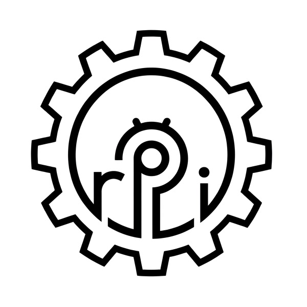

docs/images/rpi-logo.jpg）：
齿轮环 + 内部细圆 + 镂空的 r p i 线稿，顶部有一对小钩。
* # % 实心），小字号终端里糊成噪点。 ⣠⣄ ⣸⠉⠉⣇ ⣠⣀
⣯ ⠈⠓⠋⢉⣀⣀⡉⠙⠚⠁ ⡽
⣠⣄⣠⠞⢀⣤⠖⠋⠉⠉⠉⠉⠛⠲⣤ ⠳⣄⣠⣄
⢸⡁ ⣰⠏ ⠹⣆ ⢘⡇
⣹ ⣸⠃ ⢀⣦⠤⠤⣶⡀ ⠘⣇ ⡏
⣴⠒⠋ ⡏ ⢠⡏⢡⡴⢦⡌⢻⡄ ⢹ ⠙⠒⣦
⠻⢤⣀ ⣇ ⢀⣈ ⢸⣄⣠⠇⢠⡇⢀⡀ ⣸ ⣀⡤⠟
⢹ ⢹⡄⢸⠋⠉ ⢸ ⣤⡴⠛ ⢠⡅⢠⡏ ⡇
⢰⡉ ⠙⣾ ⢸ ⣿ ⢸⣷⠋ ⢙⡆
⠙⠚⠙⢦⠈⠐⠦⣄⣼ ⣿⣀⣤⠴⠈⠁⡴⠋⠓⠋
⣾⡀⢀⡤⣄⣀ ⣀⣤⢤⡀⢀⣧
⠉⠋ ⢹⣤⣤⡏ ⠙⠉
r p i 都还认得出来；比现在矮一半，还更“像 logo”。⢠⠔⣄⡠⠋⠹⢄⣠⠢⡀ ⢀⣀⡼⢀⡤⠒⠒⠒⠒⢤⡀⢧⣀⡀ ⢧ ⡴⠁ ⠘⢆ ⡼ ⡠⠜⢰⠁ ⢀⠞⡩⢍⢳⡀ ⠘⡄⠣⢄ ⠓⢢⠸⡀⣠⠬ ⡧⠜⣰⠃⠄⢠⠃⡔⠊ ⡜ ⠳⡇ ⡇⡏⠁ ⣧⠎ ⢣ ⠈⠉⢳ ⠐⠲⠇⠧⠔⠂ ⡞⠉⠁ ⠈⠒⠊⠙⣄⣰⠋⠑⠒⠁
r p i 的笔画已经到 1 点的极限，靠整体轮廓辨认。
▄▄▄
▄▀▄ ▄▀ █▄▄▄ ▄
▀▄ ▄▄▄▄▄▄▀ █
▄▄▄▀ ▄▀▀ ▀█▄ ▀▄▄▄
▄ ▄▀ █ █
█ ▄▀ ▄▄▄▄▄ █ █
▄▀▀ █ ▄▀▄▄▄ ▀▄ █▄ ▀█▄
▀▄▄ █ ▀ █▄▄▀ █ ██ ▄█▀
█ ▀▄ █▀▀ █ ▄▄▀ ▄ █ █
▄▀ ▀██ █ █ ██ █
▀▄▀▄ ▄▄ █ █ ▄ ▀ ▄ ▄▀
▄▀ ▀▀ ▀▀ █
▀▄▀▀▀▄ █▀▀▀ ▀
▀▀▀
Color::Default），浅色主题下自动变黑。| 方案 | 高度 | 宽度 | 点阵 | 字符集 | 字形风险 | 还原度 |
|---|---|---|---|---|---|---|
| A · 现状 3D 徽章 | 22 行 | 44 列 | 44 × 22 | .-:=+*#%@ | 低（单宽） | 低（实心盘，不是线稿） |
| B1 · 盲文 24×12 | 12 行 | 24 列 | 48 × 48 | 盲文 U+2800 | 中（需字体覆盖盲文） | 高 |
| B2 · 盲文 16×8 | 8 行 | 16 列 | 32 × 32 | 盲文 U+2800 | 中 | 中（靠轮廓辨认） |
| B3 · 半块 32×16（白） | 16 行 | 32 列 | 64 × 32 | █ ▀ ▄ | 低（覆盖最广） | 中 |
生成方式：把 docs/images/rpi-logo.jpg 缩到 160×160，
取墨迹阈值 140 得到二值掩膜，按外接方框裁剪成正方形；每个盲文点 / 半块用 3×3 子采样算覆盖率，
覆盖率 ≥ 48% 记为墨点（半块 ≤ 45%）。盲文点宽高相同（终端格 1:2，盲文格 2×4 点 → 点正好是方的），
所以圆形不会被拉扁；半块方案纵向分辨率只有盲文的一半，这就是 B3 字母发糊的原因。
宽度安全性：盲文点阵 U+2800–U+28FF 的 East-Asian Width 是
Neutral，unicode-width 一律算 1 格（rpi-tui 的 visible_width 也是 1），
不像 π 那样在 CJK locale 下会变成 2 格。
spin.rs 的 7 秒片头和每帧重绘。